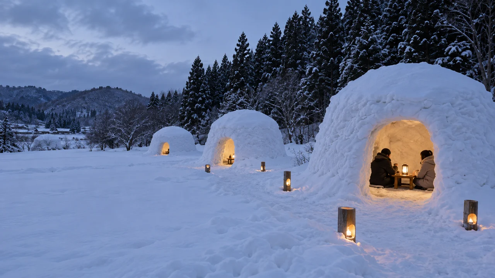
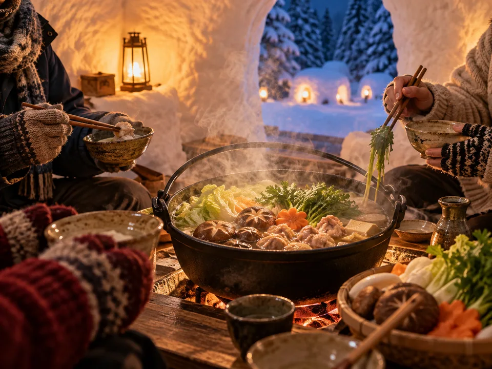
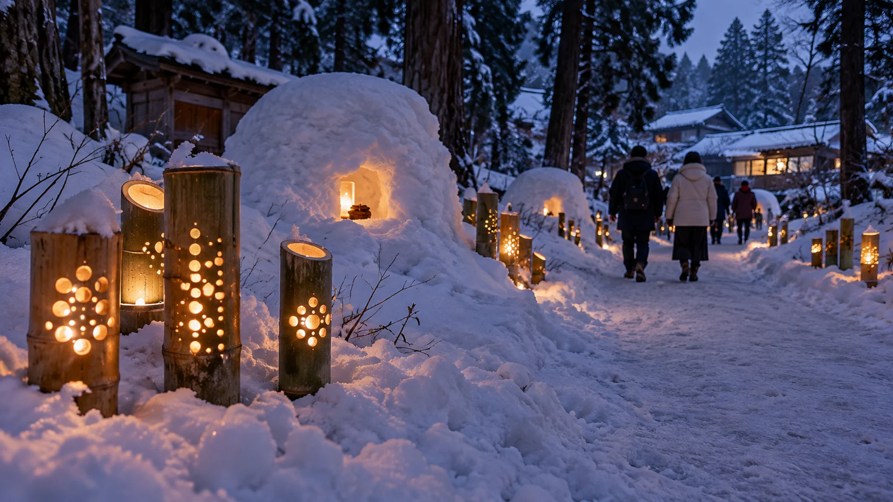
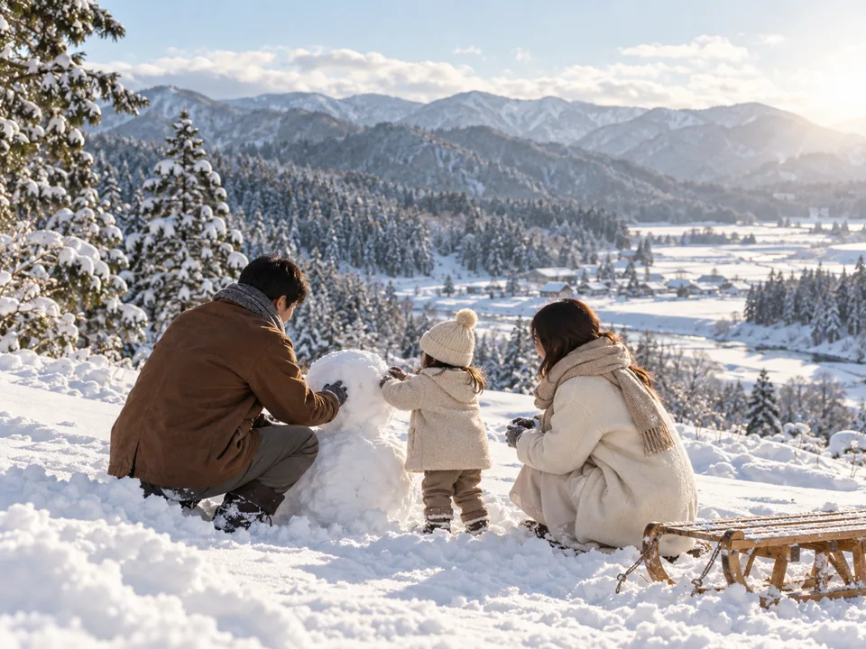

01 INBOUND
HOT POT COURSE 01
インバウンド
プランInbound
Plan
海外からお越しの方に向けたプランA plan for visitors from overseas
大人 1名Per adult
¥6,000
小学生School-age child¥5,000
未就学児Preschool child無料Free
大人1名でのご利用Solo adult¥11,000
MINAMIAIZU / FUKUSHIMA / JAPAN
真っ白なかまくらの中で、
湯気の向こうに見つける冬のしあわせ。Step inside a snow hut, gather around a steaming hot pot, and discover winter in Minamiaizu.
会場｜会津山村リゾート 福島県南会津町Venue | Aizu Sanson Resort, Minamiaizu, Fukushima


※写真はイメージです。*Illustrative image.
✳ ABOUT THE EXPERIENCE ✳
雪に囲まれたかまくらの中で、あたたかな鍋をみんなで囲む。窓の外には南会津の雪景色。食事も冬の景色も楽しめる、この季節だけの特別な体験です。Gather around a hot pot inside a cozy snow hut, surrounded by the beauty of Minamiaizu in winter. A special seasonal experience to share with family and friends.
✳ OUR HOT POT PLANS
どのプランも
「かまくら利用＋鍋」がセット。Every plan includes
a snow hut experience + hot pot.
HOT POT COURSE 01
海外からお越しの方に向けたプランA plan for visitors from overseas
HOT POT COURSE 02
鍋の内容は検討中（すきやき案）Menu under consideration (sukiyaki proposed)
HOT POT COURSE 03
鍋の内容は検討中（水炊き案）Menu under consideration (mizutaki proposed)
料金はすべて税込、Web予約・クレジットカード事前決済の場合の価格です。原則2名様から。大人1名の場合は各プランのシングル料金が適用されます。未就学児は無料（お椀と箸のみ・食事なし）です。All prices include tax and apply to online reservations with advance credit card payment. Generally for 2 or more guests. The solo adult price applies to a single adult. Preschool children are free; bowl and chopsticks only, no meal included.
THE DAILY SCHEDULE
平日・土日祝すべて同じ時間帯で開催予定。1回75分のかまくら体験です。Four daytime sessions, each lasting 75 minutes. The same time slots are planned for weekdays, weekends and public holidays.

AFTERGLOW OF WINTER
南会津の冬に、あたたかな竹ランタンの灯りが広がります。Warm lantern light transforms the snowy landscape of Minamiaizu.
※写真はイメージです。ランタンの点灯時刻は未定で、昼の鍋プランで点灯を見られる保証はありません。*Illustrative image. Lantern lighting times are not yet confirmed and may not overlap with the daytime hot pot sessions.✳ VENUE & ACCESS
会津鉄道「会津山村道場駅」から徒歩約14分。お車の場合は冬用タイヤ等を装備し、道路状況をご確認ください。Approx. 14 minutes on foot from Aizu-Sanson-Dojo Station. If driving, please use suitable winter tires and check road conditions.
Google マップで見るView on Google Maps
BOOKING INFORMATION
このページではプラン・料金のご案内のみを行っています。日付・人数の選択、空き状況の確認、決済は専用予約サイトで受け付ける予定です。This page introduces plans and prices only. Date and guest selection, availability checks, and payment will take place on a dedicated reservation site.
予約受付開始後、こちらにリンクを設置します。A booking link will appear here when reservations open.
お問い合わせContact us ↗✳ GOOD TO KNOW
原則2名様からご利用いただけます。大人1名での利用にはシングル料金が適用されます。定員は最大15名です。Bookings are generally for two or more people. A solo adult rate applies for one adult. Capacity is up to 15 guests.
無料です。お椀と箸のみをご用意し、食事は付きません。Preschool children are free. A bowl and chopsticks are provided, but no meal is included.
このページでは「かまくら利用＋鍋」のセットプランをご案内しています。食事なしの利用については別途お問い合わせください。The plans shown here include both a snow hut and a hot pot meal. Please contact us about visiting without a meal.
国内プラン①のすきやき、国内プラン②の水炊きは検討中のメニュー案です。正式な内容・アレルギー対応は確定後にご案内します。Sukiyaki for Domestic Plan 01 and mizutaki for Domestic Plan 02 are proposals, not confirmed menus. Final details and allergy information will be announced later.
予約サイトは現在準備中です。予約開始後、専用サイトで希望日時・人数を選んでクレジットカード事前決済を行う予定です。The booking site is being prepared. When it opens, you will be able to choose a date, time and guest count and pay by credit card in advance.
点灯時刻は未定です。昼の鍋プランの時間帯にランタンが点灯していることは保証できません。Lantern lighting times are not yet fixed, so illumination during the daytime hot pot sessions is not guaranteed.